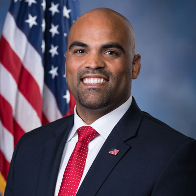

<div class="container">
	<div class="row">
        <div id="speaker-detail" class="col-lg-10 col-lg-offset-1">
            <div class="row">
            	<button title="Close (Esc)" type="button" class="mfp-close">×</button>
                
                <div class="col-md-5 col-lg-5 no-padding">
                    
                </div>
                    
                <div class="col-md-7 col-lg-7">
                    <h2>Colin <span>Allred</span></h2>
                    <p class="lead">U.S. Representative</p>
                    <!--
                    <ul class="social list-inline list-unstyled">
                    	<li><a href=""><i class="fa fa-2x fa-facebook-square"></i></a></li>
                        <li><a href=""><i class="fa fa-2x fa-twitter-square"></i></a></li>
                        <li><a href=""><i class="fa fa-2x fa-google-plus-square"></i></a></li>
                        <li><a href=""><i class="fa fa-2x fa-linkedin-square"></i></a></li>
                    </ul>
                    -->
                    
                    <div id="content">
                    	<p>Born and raised in North Dallas by a single mom who was a Dallas public school teacher, Congressman Colin Allred was student body president at Hillcrest High School and earned a full-ride football scholarship to Baylor University.</p>

<p>Diploma in hand and prepared to attend law school, Colin deferred his acceptance to play in the NFL. He was a linebacker for five seasons before sustaining a career-ending injury that opened the door for him to fulfill his other dream -- becoming a civil rights attorney.</p>

<p>Colin served in the General Counsel’s office at the U.S. Department of Housing and Urban Development. Colin later returned home to Dallas and decided to run for office to represent the district he grew up in.</p>

<p>As a Representative, Colin is dedicated to helping North Texas families gain the same opportunities he had to fulfill his dreams. Colin’s top priorities in Congress are working to lower health care costs, protecting Medicare and Social Security, and creating an economy that works for everyone. Colin is passionate about expanding access to vocational and trade schools and lowering the cost of college so all North Texans have the shot at a middle-class job. He believes Congress must find common ground to rebuild our aging roads and bridges, pass comprehensive immigration reform and take care of our veterans.</p>
                    </div>
                </div>
            
            </div>
        </div>
    </div>
</div>